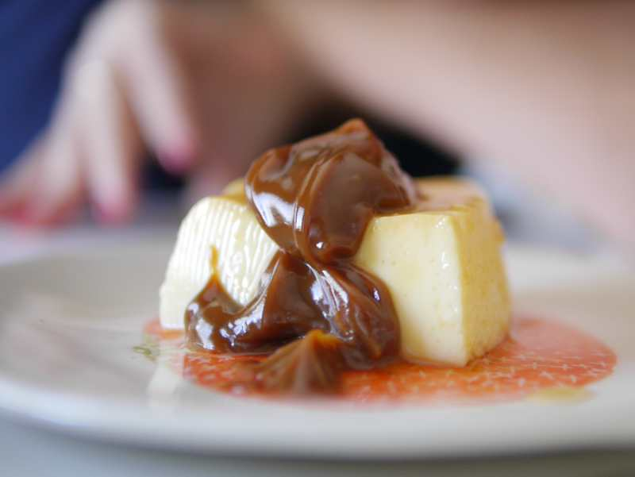

Top 10 recetas del mes
Empanada Capresse
El término caprese se refiere a la isla italiana de Capri, son las mejores empanadas.
Enchiladas
Las enchiladas potosinas con papa, zanahoria y un monton de especias.
Garnachas
Las garnachas mexicanas son pequeñas tortillas de maíz fritas.
Tamales Sinaloenses
Los tamales son una variedad de tamales típicos de México, Sinaloa.
Gorditas de Requeson
Las gorditas son una auténtica delicia de la gastronomía mexicana.
Tarta de pollo y queso
Son preparaciones deliciosas con las que puedes añadir ingredientes exquisitos.

Tacos de sesos
Son un platillo que por su nombre podría sonar bastante exótico.
Salmorejo de aguacate
Prepara una crema fría, diferente, original y refrescante salmorejo.
Yuca rellena con queso
Este piqueo es muy popular en los restaurantes peruanos, similares a unas croquetas.

Flan Cacero
Esta receta de flan casero es muy fácil, y además es infalible.